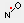

Overview • User interface • Special tasks ↑
A network in MMM is a set of M sites with some or all of the M(M-1)/2 site-pair distances being known. If all distances are known the geometry of the network polyhedron can be fully determined, except that the mirror image is also a possible solution. If at least 4 of the sites are reference points in a known structure, this ambiguity can also be resolved. In fact, the set of M 3D coordinates has only 3M-6 degrees of freedom, as rotation and translation of the whole network do not affect internal geometry or node-to-node distances. Hence, the problem can still be solved when 3M-6 distances are known. For instance, a network with 6 nodes has 15 distinct node-to-node distances, whereas 12 distances are sufficient to determine geometry.
If at least 3 of the sites are reference points in a known structure, the network can be fitted to the known structure with mirror image ambiguity. With 4 reference points, the mirror image ambiguity vanishes.
Typical application scenarios are the localization of spin-labeled cofactors or substrates with respect to a protein, see Gaffney et al., Biophys. J. 2012, 103, 2134-2144 or the localization of several spin-labeled residues in a domain that is not resolved in a crystal structure or NMR structure. The feature may also be useful if the structure is completely unknown. In that case the network together with the known number of amino acid residues between sites and possibly secondary structure restraints from accessibility measurements or a web server may help to develop hypotheses on the structure. If you do not have enough distances between the reference points, but at least three distances between each of the unknown points and some reference points, you should use localization instead.
At least three distances to distinct reference points are required. In this case localization will result in an ambigous result, with two sets of coordinates that are mirror images with respect to the reference point triangle. This ambiguity is resolved by a fourth reference point unless the symmetry is accidentally maintained by the fourth point. In practice, localization with four reference points still results in substantial uncertainty if the distances are uncertain. This is always the case with spin labels, since predictions of spin label conformational distribution are uncertain. Hence, whenever possible, at least five reference points should be used.
The network nodes do not need to be spin labels. However, the current implementation can directly compute reference coordinates from a given structure only for spin labels. Other reference points have to be specified with their full coordinates in the constraint file. Currently it is not possible to mix automatic coordinate computation for spin labels with direct specification of other reference points. As a workaround you may determine mean spin label reference coordinates with the DEER window and write these coordinates in the constraint file.
If all the M(M-1)/2 site-pair distances are known, solution of the problem by distance matrix geometry is straightforward. The M×M distance matrix is converted to a metric matrix (metric_matrix.m), the metric matrix is diagonalized, and if the first three eigenvalues are all positive, the network point coordinates are given by the first three eigenvectors scaled by the square root of the corresponding eigenvalue (dmat2coor.m, see also G. M. Crippen, T. F. Havel, Distance Geometry and Molecular Conformation, Research Studies Press Ltd. Taunton, 1988.). If the input distances are inconsistent with a 3D structure the matrix cannot be embedded (zero or negative values among the first three eigenvalues). In that case the program returns with an error message in the Message board.
Since the distances are fraught with errors, there is no guarantee that the node coordinates indeed fulfill all distance constraints. The coordinates are iteratively refined (bound_refiner.m) until they are within lower and upper bounds specified in the constraint file. For mean distance/standard deviation pairs (r,σ), the bounds are taken as r - 2 σ and r + 2 σ. Lower bounds below 3 Å and upper bounds above 100 Å are set to these general bounds. The general bounds can be redefined in the constraint file. If iterative refinement fails, the program returns with an error message in the Message board.
If not all site-pair distances are known, the missing distances have to be estimated from lower and upper bounds (restraints). Such bounds can be specified for individual distances in the constraint file. If constraints (r,σ) or restraints (lower and upper bound) have been specified for at least 3M-6 site pairs, a Monte Carlo solution is attempted. For the missing distances random guesses are made in the interval between the general lower and general upper bound (default 3 to 100 Å). It is possible to specify only a tighter lower or only a tighter upper bound for individual distances in the constraint file. Bounds are refined by triangle bound smoothing (G. M. Crippen, T. F. Havel, Distance Geometry and Molecular Conformation, Research Studies Press, Taunton, 1988, p. 252 f.).
In Monte Carlo mode, the program attempts to compute 1000 sets of consistent node coordinates (models). After a computation time of 1 hour the program is stopped, even if less than 1000 sets were found. In this case the problem is not sufficiently constrained. The program returns with an error message in the Message board if it did not find any solution, otherwise it reports the number of trials and the number of failed embeddings. The preliminary node coordinates are computed as the mean coordinates of all models.
The coordinates obtained in the previous step are used to obtain estimates of uncertainty for each network node. For each node a cube with 6 nm side length with the node as its center is searched for locations that are consistent with the mean coordinates of the other nodes and the known distances. This cube is sampled by a grid with uniform spacing Δx = Δy = Δz = 0.4 Å. The probability for the spin label to be located at a given grid point is computed. From the n experimental distances to the reference points and the corresponding distances of the grid point to the reference points the program calculates probabilities pi (i = 1... n) that these distances are consistent with experiment. This is done either by assuming a Gaussian distribution of the individual distances, with mean values and standard deviations given in the constraint file, or by using a numerical distribution that must be specified also in the constraint file. Assuming that the distance distributions are uncorrelated, the total probability for the node to be located at this grid point is the product of the n individual probabilities. If an upper bound/lower bound restraint is violated at the grid point, the probability is set to zero.
After computing this total probability at all grid points, we know a probability density distribution in the cube at 0.4 Å resolution. We now find a level l½ of the normalized probability density so that an probability density isosurface at this level includes 50% of the total probability. This level is determined at 1% resolution of the maximum probability density. The isosurface is displayed as a red semitransparent surface object. Note that inclusion of 50% of the total probability is also usual practice in displaying thermal ellipsoids in crystal structures of small molecules. Note, however that in the case at hand the isosurface is only a rough approximation since in computing this surface, no uncertainty was assigned to the coordinates of all other nodes. Nevertheless, visualization of these surfaces provides a qualitative picture of how well or how poorly the problem is constrained. The isosurfaces are clickable. When clicked, the site tag, the center of gravity of the density cloud, and the point of highest probability are reported in the Message board.
Important quality measures are reported during the computation in the Message board. The highest location probability is a measure for the maximum probability that all distance constraints are simultaneously fulfilled at any point in space. A perfect solution has a value of 1. Values smaller than 1 are to be expected even if the distance distributions are known exactly, since they will be correlated to some extent and this correlation was neglected in computing probability density. However, values smaller than 0.25 usually indicate problems with the experimental constraints. The second quality measure is the maximum relative probability at density cube border. A good solution has 0.00%, but values of a few percent are acceptable. Values larger than 10% indicate that the experimental constraints are insufficient for localization. If the constraints are very poor, it may even happen that the 50% isosurface extends beyond the 6 nm cube. This is easily recognized by the displayed surface not being closed. In such cases, additional experimental constraints are required.
For interactive analysis of the result in MMM or other PDB viewers the spatial probability distribution for each node can be sampled by an ensemble of point coordinates. For that, the volume enclosed by the 50% isosurface is successively filled by spheres, starting at the point of maximum probability density. The next spheres are also located in the point of maximum probability density, but under the constraint that they do not intersect any of the spheres that were put before. The spheres are displayed as grey balls with a transparency corresponding to relative probability density at their center. Number and diameter of the spheres can be specified in the constraint file. If the specification is missing only a single sphere with a diameter 2 Å is created at the point of maximum probability density.
The ensembles of spheres that sample the 50% probability density volume of the nodes can be written out as a PDB file (see constraint file). The spheres are specified as sodium atoms, each set of M spheres for the M nodes corresponding to a separate model. Relative probability densities at the sphere centers are stored as occupations. This file can be re-read by MMM and is also compatible with Accelrys Discovery, Chimera, PyMol, and Swiss-PdbViewer 4.1.0. Inspection of the set of models is particularly convenient with Accelrys DS Visualizer.
A constraint file serves for both specifying the distance constraints between the reference points and the point to be localized and for controling output. A typical constraint file looks like this:
% Network fit and superposition for localizing LOPTC in liopxygenase structure 1YGE
% Restraints from B. J. Gaffney et al., Biophys. J. 2012, 103, 2134-2144
# PDB 1YGE % if this file is loaded into MMM before selecting network,
% the network is fitted to the five reference points
# ENSEMBLE 20 2
# OUTPUT Gaffney_network
# NETWORK SBL1 0.5 MTSL 298 constraints
270 480 3.25 0.30
270 569 3.70 0.30
270 619 4.70 0.30
270 782 3.80 0.30
480 569 3.75 0.30 % comment out this line for Monte Carlo test
480 619 4.65 0.30
480 782 5.25 0.30
569 619 4.40 0.30
569 782 5.20 0.30
619 782 2.20 0.30
LOP 270 2.30 0.30
LOP 480 4.30 0.30
LOP 569 3.80 0.30
LOP 619 4.70 0.30
LOP 782 3.75 0.30
# END
This file is provided as
network_Gaffney.dat in MMM subdirectory \test\multilateration.
Lines starting with a percent character. %, are comment lines. Lines starting with a hash characters, #, are command lines. Other lines provide additional arguments to the previous command. The optional # PDB command specifies the reference structure. A reference structure can be loaded into MMM and must then be the active structure. If there is a mismatch between the tag of the active structure and the identifier specified in the # PDB command, a dialog window pops up for confirmation. Apart from activating this security question, the # PDB command has no function. Network computation can be run withour reference structure.
The optional # ENSEMBLE command specifies how many spheres shall be used for sampling the 50% probability volumes (default 1) and which diameter they shall have (default 2 Å).
The optional # OUTPUT command specifies whether a PDB file with an ensemble of possible network coordinates is written. If the command is present without an argument, a PDB file with name network_tag.pdb is written, where tag is the tag specified with the # NETWORK command. A user-defined filename can be specified as an argument of the # OUTPUT command, as in the example above. If the filename argument does not have an extension .pdb, this extension is automatically appended. Unless a full path name is given, the PDB file is written to the directory from which the constraint file was loaded.
The mandatory # NETWORK command signifies that the following lines until the next command are constraint lines. Its first argument is the tag used in place of a PDB identifier in the output PDB file (SBL1 in the example) and in an automatically generated filename for this file. If this tag is missing, it defaults to DGM1, although it is not recommended to omit the tag. The second, optional argument can be used to specify the isosurface level (probability included in the volume, defaults to 0.5). As a third, optional argument, the type of labels at the reference points can be specified (currently either MTSL or IA-Proxyl, with MTSL being the default. As a fourth, optional argument, the temperature of the rotamer library can be specified. It defaults to 298 K. The fifth, optional argument specifies the extent of visualization (default is constraints). With full both spheres at the nodes and the constraints are visualized. Constraints between two reference sites are shown as dark blue lines and other constraints as red lines. With nodes only the node spheres are shown. With constraints only constraints between nodes are shown. With none both node and constraint display is suppressed. The probability isosurfaces and the spheres sampling them are always displayed.
The # NETWORK command is followed by as many constraint lines as there are reference points. Each constraint line has at least three arguments. The first argument is the address of the spin-labeled residue, either just the residue number or an MMM address, such as (B)23 for residue 23 in chain B of the active structure. For distance constraints the second argument is the experimental mean distance (in nanometers) between the reference label and the paramagnetic center to be localized. The third argument is the standard deviation of this distance, also in nanometers. Distances and standard deviations can alternatively be specified in Ångstroems. For that the # NETWORK command has to be preceded by the command # UNITS A or # UNITS ANGSTROEM.
To input restraints (lower or upper bounds) the second argument (lower bound) or third bound (upper bound) must be given as negative numbers. If only one of the two arguments is negative, the positive one is ignored and replaced by the default bound.
Constraint lines can specify the filename of a distance distribution file in DeerAnalysis output format. In that case probability densities are taken from the experimental distribution rather than computed from the mean distance and standard deviation. Unless a full pathname is provided, MMM expects the distance distribution file in the same directory from which the constraint file was loaded.
The optional commands # LOWER and # UPPER allow for adjusting the default lower and upper distance bounds that are applied to node pairs for which no constraint or restraint was specified. The defaults are 3 and 100 Å, respectively. Adjusting these bounds according to the expected network size and minimum distance between nodes can strongly improve model quality in cases where some node pairs are otherwise unconstrained. Note that these bounds must be consistent with all node pair distances in the network, including those ones that are specified by individual constraints or bounds.
If necessary, coordinates for reference points can be directly specified with the # REFERENCE command, as in the following example:
# REFERENCE
S270 17.13 59.97 2.23
S480 -7.19 45.70 2.54
S569 12.41 47.50 33.61
S619 25.57 16.19 10.35
S782 41.14 29.12 1.84
# NETWORK SBL1 0.5 MTSL 298 full
S270 S480 3.25 0.30
...
# END
The lines after the # REFERENCE command consist of the reference site tag and the x, y, and z coordinates. Please note that coordinates are specified in Angstroems, irrespective of the units for distance restraints. If a # REFERENCE command exists, all reference sites must be specified by coordinates. Note also that the arguments MTSL 298 of the # NETWORK command are ignored in this example.
If you want to mix spin labeled reference sites and other reference sites, you need to determine mean spin label coordinates manually and write them into the constraint file. To do so, select the residues to be spin labelled and perform a spin labeling site scan, attach the labels by clicking the labeling toolbutton. Then go to the DEER window and select the labeled sites, one by one, in the Labels & selected atoms listbox. The coordinates in Angstroem appear below the listbox.
It is good practice to finish the constraint file by an # END command.